|
 |
 |
Puntos de
Inflexión Ecológica
- Cómo funcionan?
- Transformando círculos viciosos a círculos virtuosos
- Ingredientes para el éxito
- Elaboren sus propios Puntos de Inflexión Ecológica
Historias por Región
Historias por Tema
- Agricultura
- Agua y Cuencas
- Bosques
- Ecosistemas Urbanos
- Educación
- Energía
- Negocios
- Pesquerías
- Salud Pública
Videos Cortos
- Salvando un arrecife coral y una pesquería
(Filipinas) - Revitalizando vecindades urbanas con jardines comunitarios
(Nueva York) - Revirtiendo la deforestación tropical con bosques comunitarios
(Thailandia) - Rellenando aguas subterráneas con captación pluvial
(Rajastán, India) - Escapando la trampa de pesticidas
(India)
Explicando el Éxito
- Salvando un arrecife coral y una pesquería
(Filipinas) - Revitalizando vecindades urbanas con jardines comunitarios
(Nueva York) - Revirtiendo la deforestación tropical con bosques comunitarios
(Thailandia) - Rellenando aguas subterráneas con captación pluvial
(Rajastán, India) - Escapando la trampa de pesticidas
(India)

Ecología Humana: Presenta los principios de la ecología humana que sirven de fundamento a los Puntos de Inflexión Ecológica
India - Bangalore - Desarrollo Residencial Ecológico
- Breve: Un pequeño y próspero barrio demuestra como la vivienda ecológica es una alternativa viable a los fraccionamientos insostenibles.
- Lea la historia detallada
- Fotos tomadas por Amanda Suutari - Todas las fotos están disponibles para descargarse gratis; favor de atribuir a la fotógrafa y al sitio de Internet.
- Pulse sobre la foto para ver los detalles.

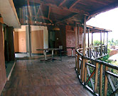
Stillwaters Restaurant

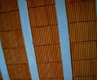
Compressed Earth Blocks

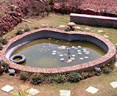
Lotus

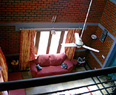
Subramanian House

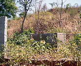
Vermicomposting Bin

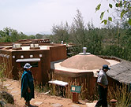
Water Percolation

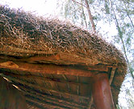
Local Traditions/Materials

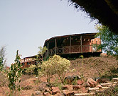
Stillwaters Restaurant

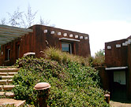
Community Center

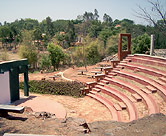
Amphitheater

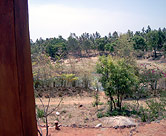
Village 'Tanks'

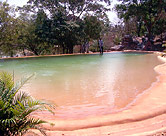
Swimming Pool

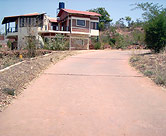
Dry Season

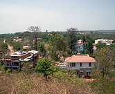
A View of the Village

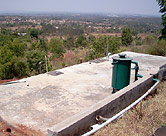
Water Tank

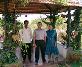
Baskar Subramanian...

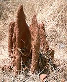
Typical Anthill

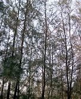
Sacred Grove

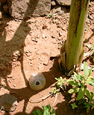
'Drip Irrigation'

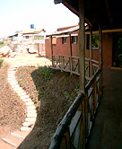
Stillwater restaurant.